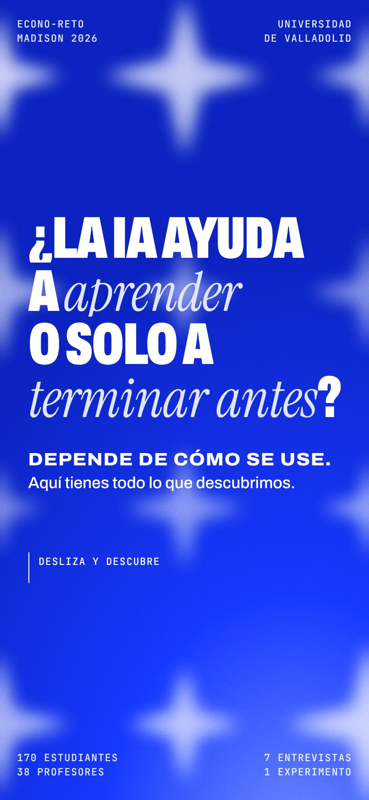
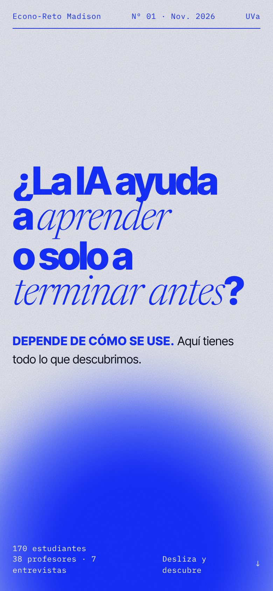
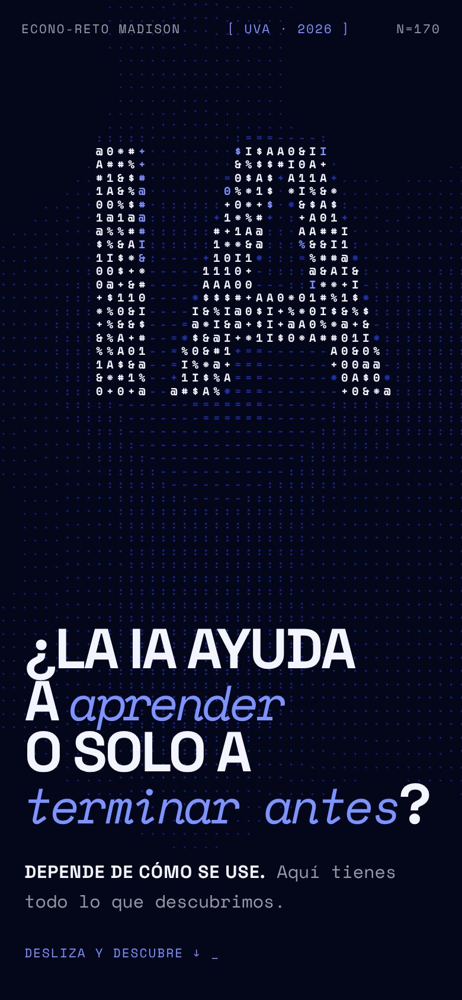
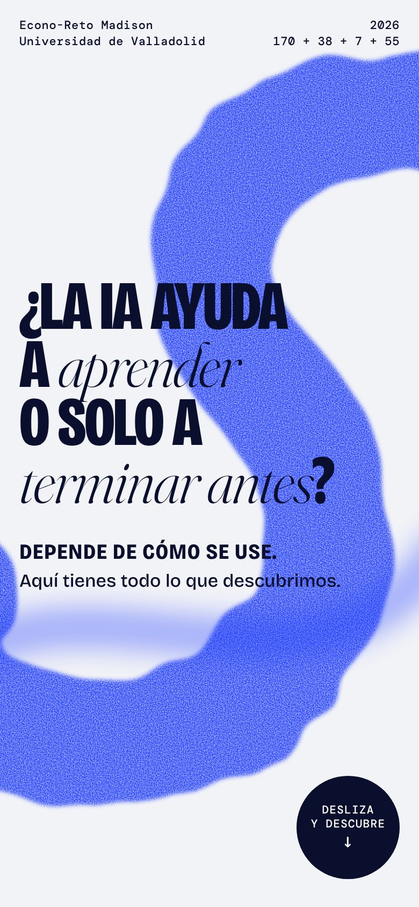

La misma portada y la misma sección de perfiles, con cuatro estilos distintos sacados de tu tablero. Ábrelas en el móvil y baja despacio para ver las animaciones.




Son solo muestras: la web original no se ha tocado. Se pueden mezclar, por ejemplo la portada de una con los gráficos de otra.